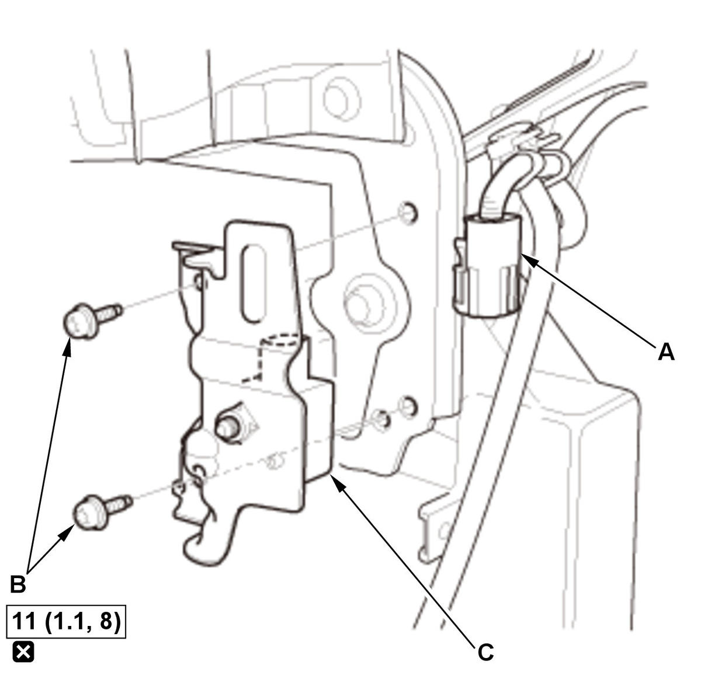
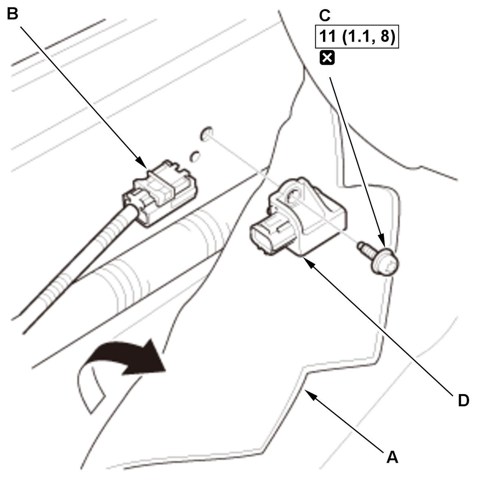
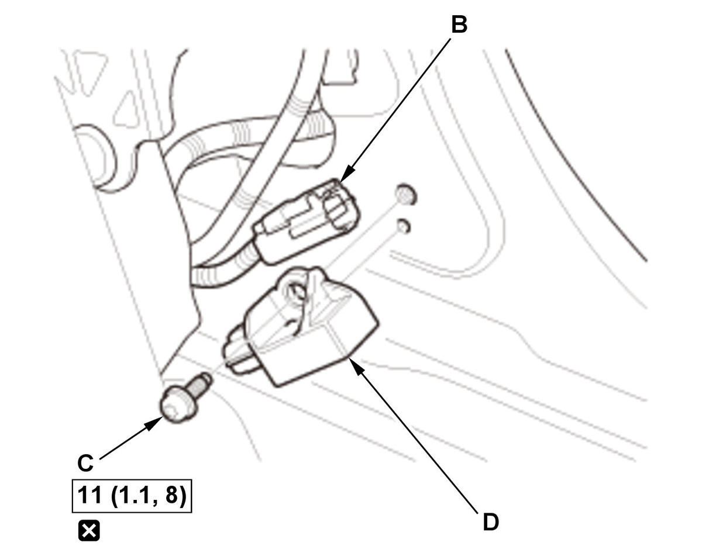
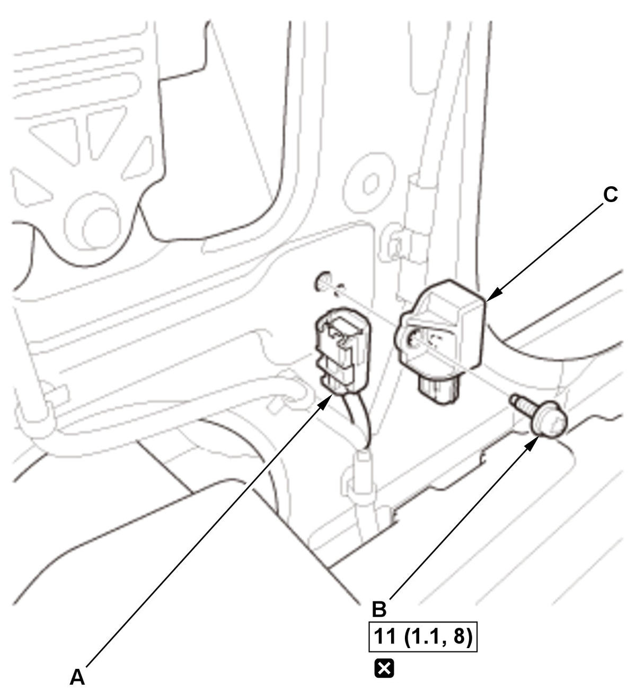
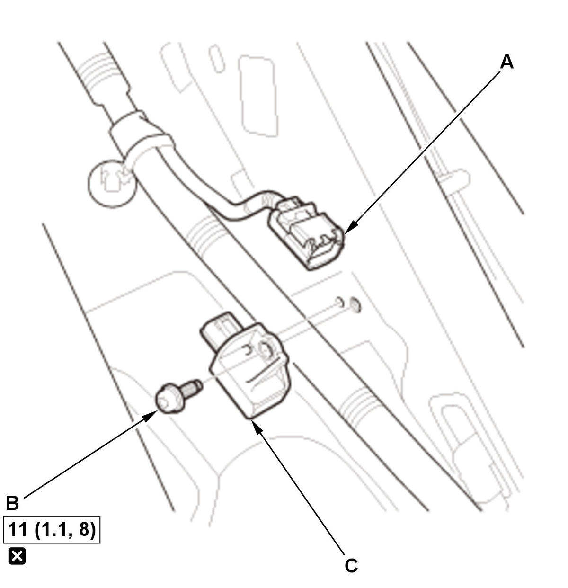

Removal and Installation
SRS components are located in this area. Review the SRS component locations and the precautions and procedures before doing repairs or service.
NOTE: How to read the torque specifications .
Front Impact Sensor
- 12 Volt Battery Terminal - Disconnect
NOTE: Wait at least 3 minutes before starting work.
- Front Bumper - Remove
- Front Impact Sensor - Remove

Courtesy of HONDA, U.S.A., INC.1. Disconnect the connector (A). 2. Remove the bolts (B), then remove the front impact sensor (C).
- All Removed Parts - Install
1. Install all of the removed parts in reverse order.
NOTE:- During installation, install the new bolts to the specified torque.
- Before installing the front bumper, make sure the SRS indicator works normally.
- SRS Operation - Confirm
1. Do the 12 volt battery terminal reconnection procedure, turn the vehicle to the ON mode, and check that the SRS indicator comes on for about 6 seconds and then goes off.
Side Impact Sensor (First)
- 12 Volt Battery Terminal - Disconnect
NOTE: Wait at least 3 minutes before starting work.
- Front Door Sill Trim - Remove (2-door)
- B-Pillar Lower Trim - Remove (4/5-door)
- Side Impact Sensor (First) - Remove

Courtesy of HONDA, U.S.A., INC.
Courtesy of HONDA, U.S.A., INC.1. 2-door: Turn over the carpet (A) to gain access to the side impact sensor (first). 2. Disconnect the connector (B).
3. Remove the bolt (C), then remove the side impact sensor (first) (D).
- All Removed Parts - Install
1. Install all of the removed parts in reverse order.
NOTE:- During installation, install the new bolt to the specified torque.
- Before installing the front door sill trim (2-door) or the B-pillar lower trim (4/5-door), make sure the SRS indicator works normally.
- SRS Operation - Confirm
1. Do the 12 volt battery terminal reconnection procedure, turn the vehicle to the ON mode, and check that the SRS indicator comes on for about 6 seconds and then goes off.
Side Impact Sensor (Second)
- 12 Volt Battery Terminal - Disconnect
NOTE: Wait at least 3 minutes before starting work.
- Rear Side Trim Panel - Remove (2-door)
- Rear Seat Side Trim - Remove (4/5-door)
- Side Impact Sensor (Second) - Remove

Courtesy of HONDA, U.S.A., INC.
Courtesy of HONDA, U.S.A., INC.1. Disconnect the connector (A). 2. Remove the bolt (B), then remove the side impact sensor (second) (C).
- All Removed Parts - Install
1. Install all of the removed parts in reverse order.
NOTE:- During installation, install the new bolt to the specified torque.
- Before installing the rear side trim panel (2-door) or the rear seat side trim (4/5-door), make sure the SRS indicator works normally.
- SRS Operation - Confirm
1. Do the 12 volt battery terminal reconnection procedure, turn the vehicle to the ON mode, and check that the SRS indicator comes on for about 6 seconds and then goes off.